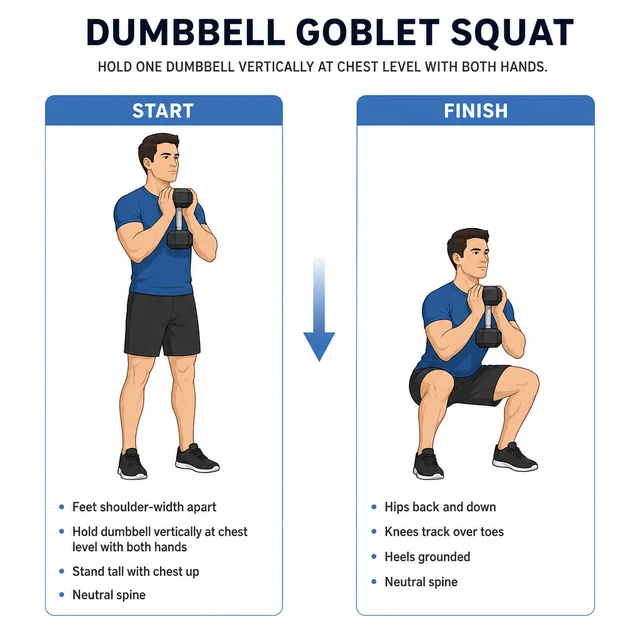
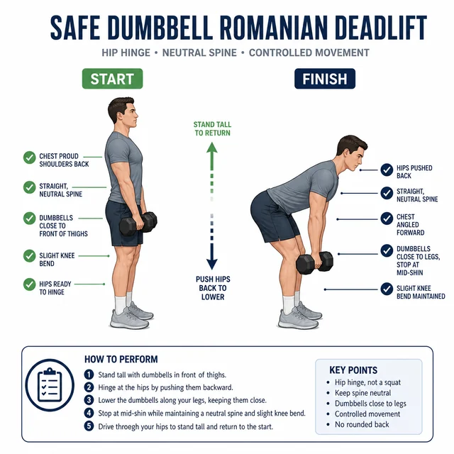
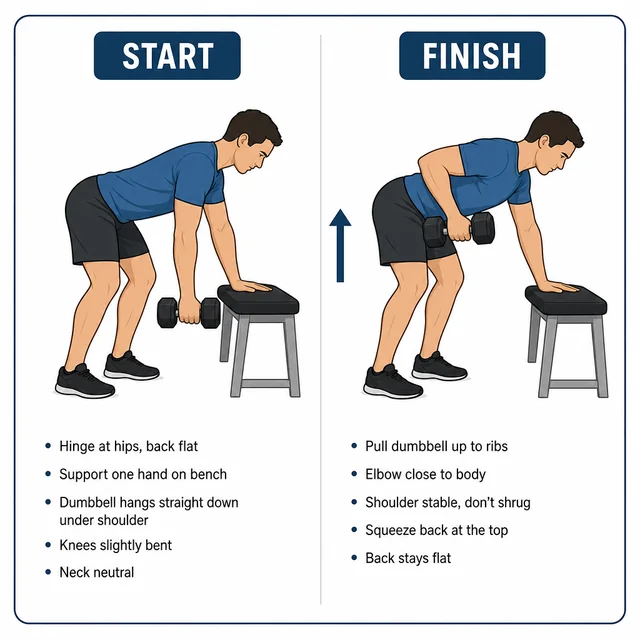
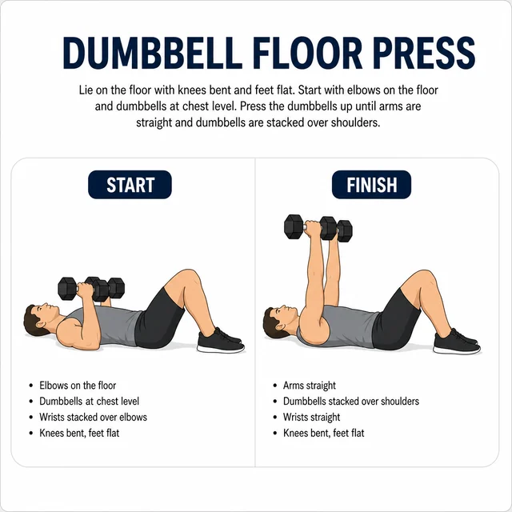
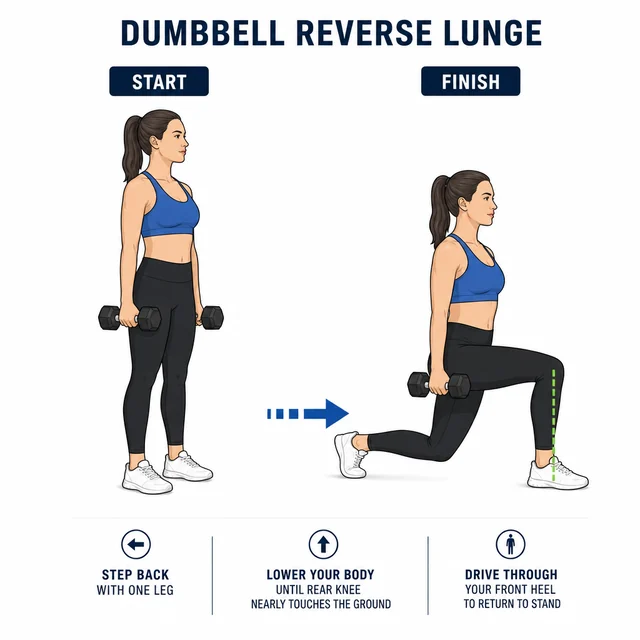
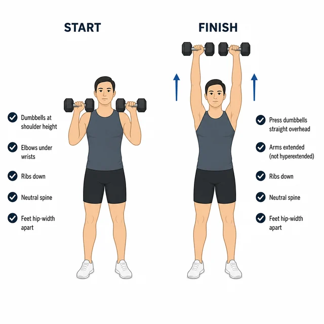
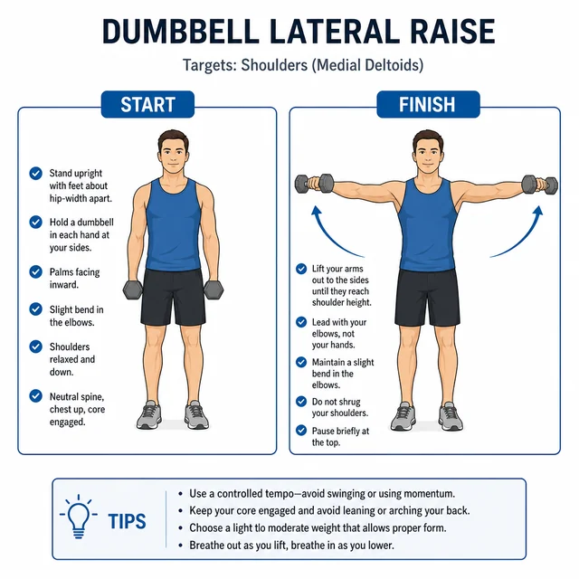
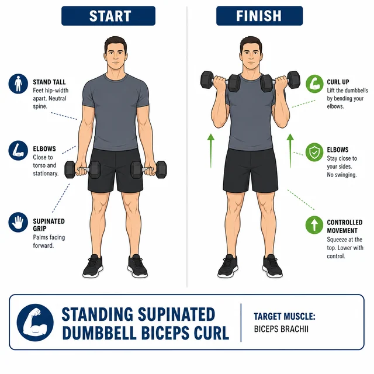
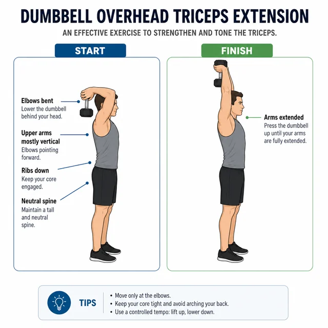
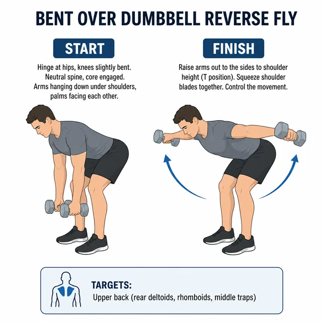

01

Beine · Po · Rumpf
Goblet Squat
Hantel vor der Brust halten. Die Knie folgen den Zehen; über den ganzen Fuß wieder aufstehen.
- Fersen am Boden
- Rücken neutral
- 2–3 × 8–12 · 10 kg
Hanteltraining zu Hause
Zehn Übungen für zwei bis drei Einheiten pro Woche. Kontrollierte Wiederholungen, Gewichte, die zur Tagesform passen, und genug Pause.

Heute
Der Stand bleibt für diesen Kalendertag lokal in diesem Browser gespeichert. Vorhandene Häkchen aus der alten Version werden einmalig übernommen; die alten Daten bleiben erhalten.
Dein Trainingsstand wird nur in diesem Browser gespeichert.
Trainingszeit
Timer bereit.
Ablauf
AufwärmenArmkreisen, Hüftmobilität, Kniebeugen ohne Gewicht und leichte Rows.
HauptteilIn Woche 1–2 zwei Sätze, danach drei. Zwischen den Sätzen ruhig atmen.
SteigernErst Wiederholungen und Sätze sicher beherrschen, dann das Gewicht erhöhen.
Trainingsplan
Die Gewichte sind Startwerte. Die letzten Wiederholungen dürfen fordern, die Bewegung bleibt aber kontrolliert. Bei Schmerzen abbrechen und fachlichen Rat einholen.

Beine · Po · Rumpf
Hantel vor der Brust halten. Die Knie folgen den Zehen; über den ganzen Fuß wieder aufstehen.

Hintere Kette
Die Hüfte nach hinten schieben und die Hanteln dicht an den Beinen führen. Nur so tief gehen, wie der Rücken neutral bleibt.

Rücken · Lat
Stabil abstützen und den Ellbogen ohne Schwung Richtung Hüfte ziehen. Die Hantel langsam ablassen.

Brust · Trizeps
Auf dem Rücken liegend drücken. Die Oberarme berühren kontrolliert den Boden, bevor die nächste Wiederholung beginnt.

Beine · Balance
Einen Schritt rückwärts setzen. Der vordere Fuß bleibt vollständig belastet, der Oberkörper aufrecht.

Schultern · Trizeps
Aus Schulterhöhe über Kopf drücken. Bauch und Gesäß anspannen, damit die Rippen unten bleiben.

Seitliche Schulter
Die Arme mit leichter Ellbogenbeuge bis ungefähr Schulterhöhe heben. Ohne Schwung langsam ablassen.

Bizeps
Die Oberarme ruhig am Körper halten und aus dem Ellbogen beugen. Kein Schwung aus Hüfte oder Rücken.

Trizeps
Eine Hantel mit beiden Händen hinter den Kopf senken und strecken. Die Ellbogen bleiben möglichst eng.

Hintere Schulter · oberer Rücken
Mit geradem Rücken nach vorn neigen und die Arme kontrolliert zur Seite öffnen. Der Nacken bleibt locker.
Gewichte
10 kg für Squat, RDL, Row, Floor Press, Curl und Trizeps. 7,5 kg für Lunge und Shoulder Press. 5 kg für Raises und Reverse Fly.
Regeneration
Mindestens ein freier Tag zwischen zwei Kraft-Einheiten. Schlaf, Essen und ein kurzer Spaziergang zählen mehr als eine erzwungene Zusatzrunde.